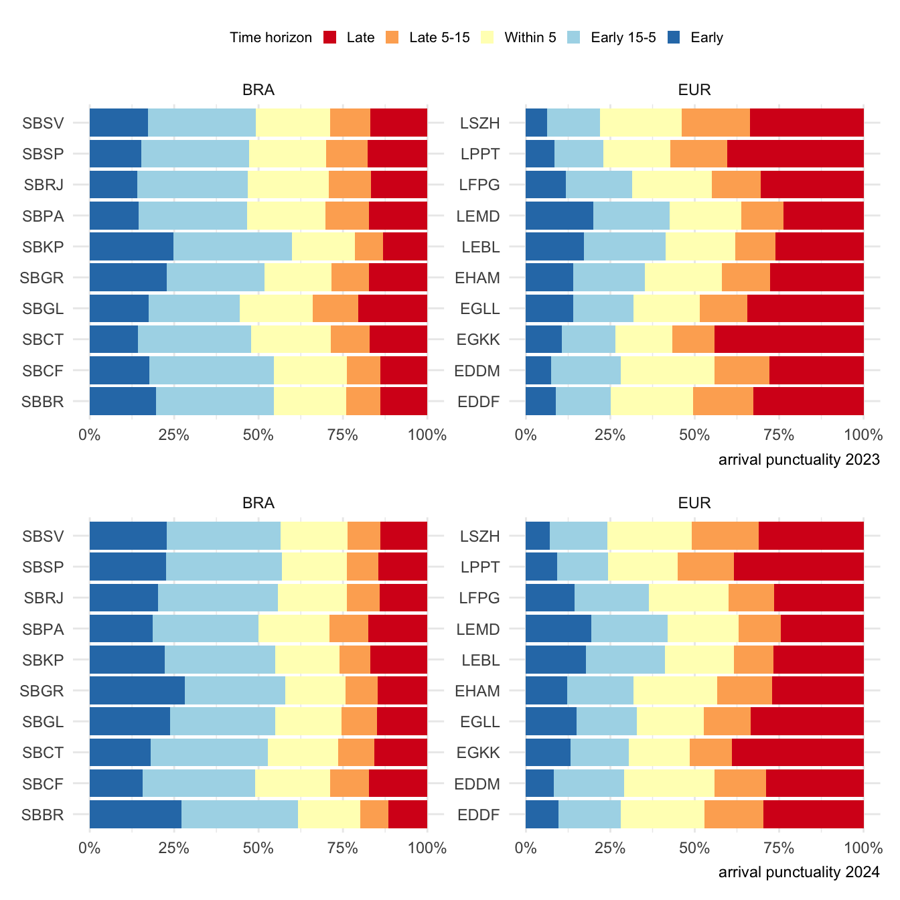
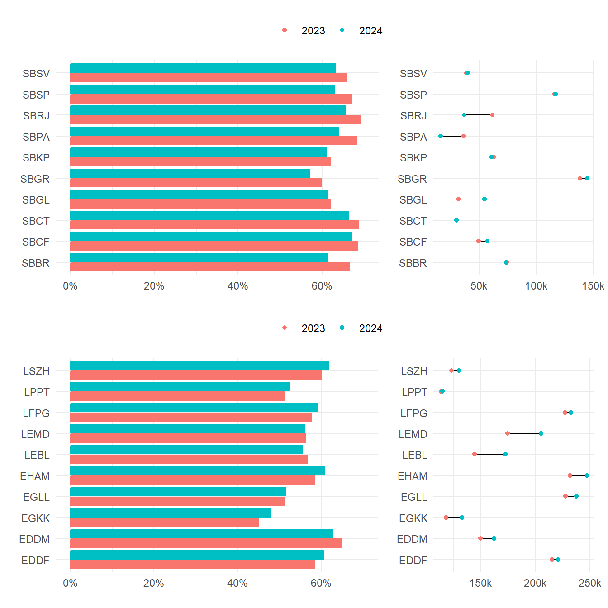
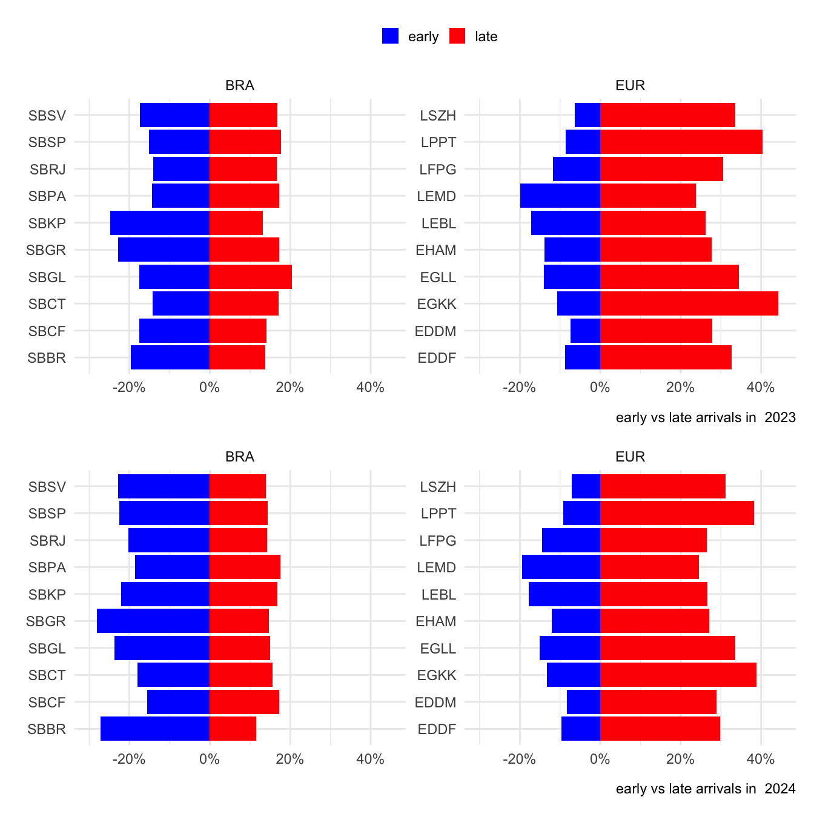
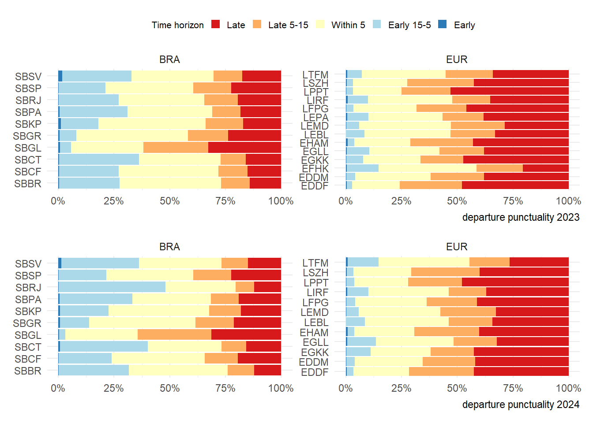
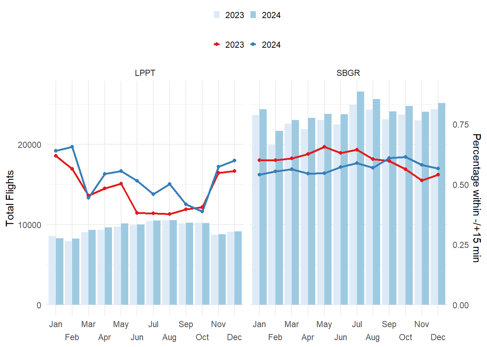
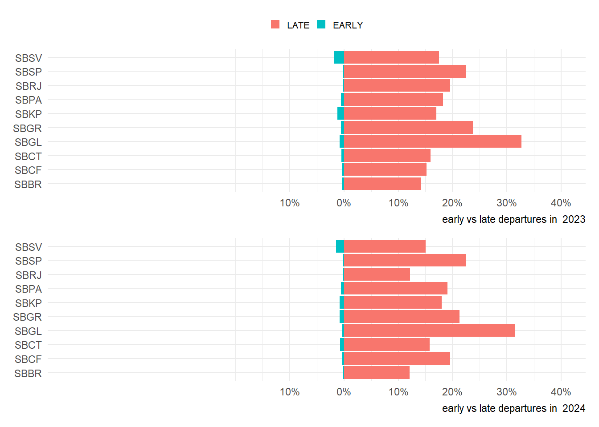

4 Predictability
The preceding sections have demonstrated that both systems exhibit unique reactions to the broader developments in air transport. Predictability plays a crucial role impacting both the strategic phase, where airline schedules are formulated, and the operational phase, where Air Navigation Service Providers (ANSPs) and stakeholders manage the balance between demand and capacity. Higher levels of predictability stands to be advantageous for ANSPs, mainly when serving airspace users, as it contributes to highly efficient operations, even during periods of peak demand. This chapter focuses on arrival and departure punctuality as crucial predictability indicators.
4.1 Arrival Punctuality
The arrival punctuality shows the predictability of landing operations at airports, based on the scheduled in-block time (SIBT). It considers a 15-minute window for early or late arrivals and expresses the percentage of flights arriving at the gate within that margin.
Figure 4.1 shows the 2024 data and reaffirms key structural differences in punctuality behaviour between Brazilian and European airports. Brazilian airports continue to report a high share of early arrivals—more than 15 minutes ahead of schedule—accounting for 20% to 30% of flights. In contrast, while some buffering is discernible, most European airports show early arrival shares below 15%. This pattern, observed consistently over recent years, reflects the use of built-in buffer times in Brazil’s scheduling practices. While these buffers help airlines improve on-time performance records, they can reduce predictability and complicate planning for air traffic management and airport operations.
Compared to Brazil, Europe observed a high level of delayed arrivals in 2023 and 2024. Across all study airports, there is a minimum of 25% of the flights arriving late, an in extreme cases ranging up to 40% at London Gatwick (EGKK) and Lisbon (LPPT). Capacity constraints on the European network level - amplified by local constraints - rippled throughout the whole network and contributed to the poor overall delay performance.
Across both regions, the share of flights arriving within the -/+ 15 minute window remains the key measure of operational predictability. European patterns remained relatively stable in 2024, while in Brazil, punctuality varied significantly among airports.
To contextualise regional contrasts, Figure 4.2 presents a side-by-side comparison between Guarulhos (SBGR) and Lisbon (LPPT) between 2023 and 2024. Despite LPPT handling less than half the volume of flights compared to SBGR, it maintained punctuality levels close to 45% in October 2024. Overall, LPPT showed gradual improvement throughout the year. In contrast, SBGR remained below its 2023 performance until September, after which punctuality slightly improved. This late-year improvement indicates a potential shift but also highlights ongoing challenges.
Compared to Figure 4.1 it is interesting to note - broadly assuming an average annual arrival punctuality of 50% of flights arriving between -/+15 minutes of their scheduled time - that the share of early and late arrivals is more balanced at SBGR, while LPPT observed an extreme high share of late arrivals.
This comparison underscores how operational structure, traffic complexity, and scheduling strategies directly influence punctuality outcomes. In Brazil, concentrated demand at a few major hubs—especially SBGR, the country’s busiest airport—makes it harder to sustain performance within the target window. The higher level of traffic can amplify network disruptions leading to high share of delay across all airports and ripple effects propagate through the network.

Figure 4.3 presents a side-by-side view of airport-level arrival punctuality and movement evolution between 2023 and 2024.
As presented above, while differences exist in the share of early and late arrivals, the number of flights arriving within -/+15 minutes of their scheduled time ranged ranged higher in Brazil than in Europe. For 2023 and 2024, a 60% share of operations serves as a useful threshold. The majority of European arrival operations at the study airports failed to meet this threshold with the highest offset observed at London Gatwick (EGKK), Heathrow (EGLL), and Lisbon (LPPT). This is contrasted by the success rate observed across the Brazilian study airports. Virtually all arrival operations ranged above this threshold.
Overall, a majority of European airports demonstrated small improvements in arrival punctuality comparing the 2023 levels with 2024. The strong traffic growth at Spanish airports, Madrid (LEMD) and Barcelona (LEBL), is not negatively impacting the overall achieved performance. At Amsterdam (EHAM) and London Gatwick (EGKK) a notable improvement in arrival punctuality was achieved despite a discernible increase in traffic among all airports in the study. On the other side, Munich (EDDM) registered a drop in punctuality, despite an increase in flight movements. This reinforces two critical operational dynamics:
First, the cumulative nature of delays, which highlights the limited resilience of the flight network — when a single flight is delayed, subsequent flights tend to be impacted due to tight scheduling and lack of flexibility. Second, increasing demand often exacerbates existing local resource constraints, especially in areas like passenger processing and turnaround operations. As a result, reactionary delays accumulate and propagate throughout the system, further reducing predictability and punctuality.
The previous section highlighted the overall arrival punctuality observed at the study airports. Lower levels of punctuality can negatively impact predictability of operations and thus put a stronger strain on resources managing the arrival flow. Next to the arrival airspace capacity, stronger variations of the scheduled arrival times pose challenges for the surface management, as taxi operations, including stand allocation and availability, might result in changes of the taxi patterns, queuing within the taxiway and apron/stand system.

Figure 4.4 compares the share of early and late arrivals at each study airport, considering arrivals more than 15 minutes ahead of or behind schedule (-15 min or +15 min) in 2023 and 2024. From a broader perspective, air traffic in Brazil continues to show a tendency toward early arrivals, while in Europe, delayed arrivals are more prevalent. Thus, it appears that Brazilian operators tend to a conservative buffering of their arrival schedules. The network level implications on the arrival punctuality in Europe throughout 2023 and 2024 can be clearly seen.
Guarulhos (SBGR) remained the Brazilian airport with the highest share of early arrivals in 2024, followed by Campinas (SBKP), both with more than 30% of flights landing ahead of schedule. As key hubs in Brazil’s network, this may reflect a deliberate strategy by airlines to better manage connections and mitigate delays within their own schedules. However, from a flow management perspective, this lack of precision poses operational challenges, as it complicates the allocation of resources and the sequencing of arrivals within controlled airspace and on the ground.
In Europe, Madrid (LEMD) recorded the highest share of early arrivals in 2024, reaching nearly 20%, followed by the other Spanish airport Barcelona (LEBL). Still, this figure remains below the levels seen in Brazil, reinforcing the structural and strategic differences in scheduling practices and performance expectations between the two regions. There is a varied explanation of the overall poor arrival punctuality performance across the airports. It is important to understand that disruptions stemming from the transition from pandemic to post-pandemic, and the overall network capacity constraints amplified each other. Airport operators were identified as the major contributors to primary delays (ground handling, staff shortage) followed by ATFM delays. However, the aforementioned reactionary effect was the main driver of knock-on delays (EUROCONTROL Central Office of Delay Analysis 2023) 1.
4.2 Departure Punctuality
The departure punctuality reflects the predictability of take-off operations at monitored airports. It is based on the comparison between the scheduled off-block time (SOBT) and the actual off-block time (AOBT), using a 15-minute tolerance window for early or late departures. The indicator expresses the percentage of flights that leave the gate within this time margin.

Figure 4.5 presents the departure punctuality results for the study airports. The 2024 data shows that, overall, airports perform better in managing outbound traffic, although challenges remain. Different from arrival punctuality, where Brazilian airports showed a high share of early arrivals and wide variability across the network—departure punctuality metrics appear comparatively stronger, especially in terms of flights departing within the punctuality (-/+ 15 min) time window.
One example is Santos Dumont Airport (SBRJ), where near to 50% of departures occurred 5 to 15 minutes ahead of schedule, reinforcing a consistent tendency toward early operations. On the other hand, Galeão Airport (SBGL) was one of the highest shares of delayed departures of flights leaving more than 15 minutes behind schedule.These two airports operate in close proximity and have undergone significant operational changes in recent years, which likely contribute to the contrasting performance.
Moreover, seasonal weather conditions—such as summer thunderstorms, wind gusts, and windshear, especially in Brazil’s South-east region, can disrupt operations, increase runway occupancy time, or require frequent runway changes, further affecting predictability.
In summary, while departure punctuality shows a slightly more favorable scenario compared to arrival operations, maintaining high performance levels still demands continuous improvements—especially at high-density airports. Operational planning, weather adaptation, and runway configuration remain key factors for enhancing outbound flight reliability.

Comparing the observed punctuality performance for departures at Lisbon (LPPT) and Guarulhos (SBGR), c.f. Figure 4.6, depicts the lower level of departure punctuality at LPPT. It appears that the punctuality performance followed broadly the seasonal development. This is in line with the earlier commentary on the network level effects impacting the overall delay situation through increased reactionary delays driven by significant ATFM delay constraints. The departure performance observed at Guarulhos is in line with the arrival punctuality pattern showing the same behaviour across 2023 and 2024.
The preceding section highlighted how the general traffic conditions in the previous years influenced the dependability of arrival schedules. In this section, we assess the degree of departure punctuality measured as the difference between the scheduled (i.e. planned) departure versus the observed actual off-block time. Figure 4.5 shows the overall departure punctuality at Brazilian and European airports in 2023 and 2024.
Departure punctuality appeared slightly higher in Brazil in 2024 in comparison to 2023 and outperforms the punctuality levels observed in Europe. It is also noteworthy, that in Brazil there is a higher share of flights blocking off between 15 to 5 minutes before their scheduled time. Further research may help to clarify the factors driving this phenomenon.

The change of the share of early and late departures in 2023 and 2024 is shown in Figure 4.7.
The observed departure punctuality at Brazilian and European airports demonstrates a positive operational behaviour: early departures (before scheduled time) are relatively small in both regions, which is favourable for maintaining schedule stability.
In Brazil, the patterns observed in 2023 and 2024 are notably similar across the study airports, indicating consistent operational practices. Galeão (SBGL) was the airport with the highest share of late departures, reaching approximately 30% in both years. Despite this, most Brazilian airports maintained a balanced distribution, with a large proportion of flights departing within the -/+ 15-minute window.
There is stark contrast in terms of overall departure punctuality between Brazil and Europe. On average, the number of delayed departures ranged about twice as high as in Brazil. In Europe, while the general behaviour remains similar, some airports experienced a deterioration in departure punctuality. Munich (EDDM) saw an increase in late departures, with the share rising above 40% in 2024. The amplification effect is evident. Delayed departures for regional flights will ultimately cause downstream delays. Disrupted schedules pose challenges to the local capacity management and surface operations. However, they also contribute to challenges of flow control on the network level. The associated imbalances influenced negatively the overall network sequencing/flow management.
While surface movement operations appear stable at most airports, the growing share of late departures at specific locations signals the need for continuous monitoring and management interventions to assure the predictability of operations.
4.3 Summary
Arrival and departure punctuality play an important role in terms of balancing demand and capacity.
Arrival punctuality revealed distinct regional patterns. Brazilian airports continued to show a high share of early arrivals, largely due to the use of built-in buffer times in flight schedules. While this improves on-time performance metrics, it complicates air traffic management by reducing predictability. In contrast, European airports generally maintained lower shares of early arrivals and more stable punctuality performance across the study period. A closer operational comparison of the behaviour at Guarulhos (SBGR) and Lisbon (LPPT) highlighted the challenges faced by large, high-density hubs in sustaining punctuality under growing demand.
Departure punctuality showed a distinct difference between both regions and when compared to the wider spread of the arrival punctuality. Early departures remained relatively rare, supporting schedule stability. However, challenges persisted, particularly at airports like Galeão (SBGL) in Brazil and Munich (EDDM) in Europe, where late departures increased. Overall, the departure punctuality in Europe was poor compared to Brazil. On average, the share of departures departing late were twice as high as in Brazil. These patterns emphasize how local operational and network constraints, weather disruptions, and surface management practices directly influence performance.
In both regions, maintaining high predictability levels remains critical to support efficient surface operations, arrival sequencing, and passenger experience. Continuous adaptation, proactive operational planning, and effective resource management are essential to sustain and improve predictability, especially as traffic demand continues to grow. As both regions are committed to move toward trajectory-based operations, the management of highly predictable air traffic flows will require attention.
See CODA report at https://www.eurocontrol.int/publication/all-causes-delays-air-transport-europe-annual-2022.↩︎